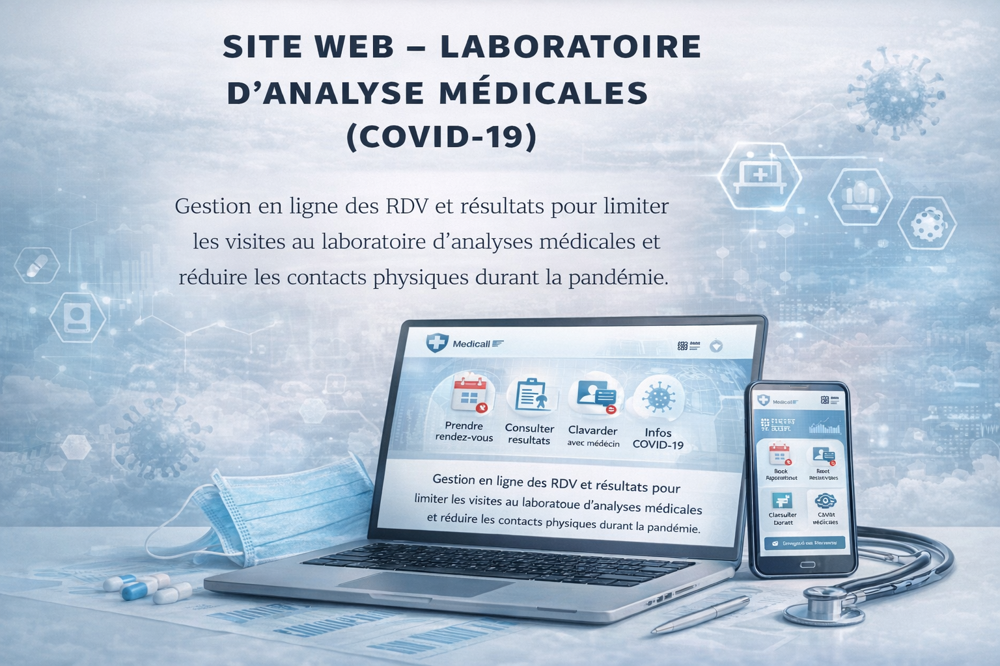

Présentation
À propos
Data Analyst avec un parcours axé sur l’analyse, la visualisation et la modélisation des données.
Je réalise des projets couvrant le cycle complet (préparation, exploration, modélisation, interprétation),
avec une attention particulière à la clarté, à la documentation et à la valeur business.
Projet mis en valeur
Analyse & prédiction des coûts d’assurance médicale
Objectif : analyser l’impact des facteurs de vie et démographiques (âge, sexe, BMI, enfants, fumeur, région)
sur les charges d’assurance et construire un modèle explicatif/prédictif.
Ce que j’ai fait : nettoyage, EDA, visualisations, tests statistiques (t-test, ANOVA, Tukey) et régression linéaire multiple.
Résultat : modèle performant (R² ≈ 0.75) ; le statut fumeur est le facteur le plus déterminant (+ ~23 800 $),
avec une hausse des charges liée aussi à l’âge et au BMI.
Projet Data
Prédiction des prix des maisons
Objectif : prédire le prix d’une maison et identifier les variables les plus influentes.
Réalisations : nettoyage, EDA, sélection de variables, régression linéaire multiple et interprétation des coefficients.
Stack : Python (Pandas, Matplotlib) / Notebook.
Projet NoSQL
Météo & alertes climatiques (MongoDB)
Objectif : structurer des données météo et produire des indicateurs utiles.
Réalisations : modèle de données, requêtes, agrégations, extraction d’indicateurs et logique métier.
Stack : MongoDB.
Projet Web & Santé
Site web – Laboratoire d’analyses médicales (COVID-19)

Objectif : réduire les déplacements et les rassemblements au laboratoire pendant la COVID-19.
Fonctionnalités : prise de rendez-vous, consultation des résultats, clavardage en ligne avec le médecin,
et informations pratiques pour éviter les visites inutiles.
Stack : HTML/CSS + SQL (défis backend, solution fonctionnelle au final).
Analyse de données
- Nettoyage, préparation et transformation des données
- Analyse exploratoire des données (EDA)
- Visualisation et data storytelling
- Tests statistiques (t-test, ANOVA, Tukey)
- Analyse de corrélation et sélection de variables
- Interprétation des résultats et recommandations
Modélisation & Machine Learning
- Régression linéaire simple et multiple
- Classification
- Évaluation de modèles (R², RMSE)
- Construction de modèles explicatifs
Programmation & Outils
- Python (Pandas, NumPy, Matplotlib, Seaborn)
- R
- SQL (requêtes, jointures, agrégations)
- MongoDB (collections, requêtes, pipelines)
Web & Développement
- HTML, CSS
- Conception d’interfaces simples
- Connexion site ↔ base de données
- Optimisation de l’expérience utilisateur
Gestion des données
- Structuration des bases de données
- Modélisation relationnelle & NoSQL
- Extraction d’indicateurs
Collaboration & Versionnement
- Git
- GitHub
- Organisation de projets
- Documentation technique